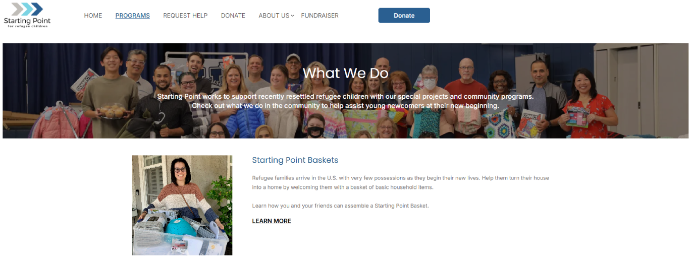
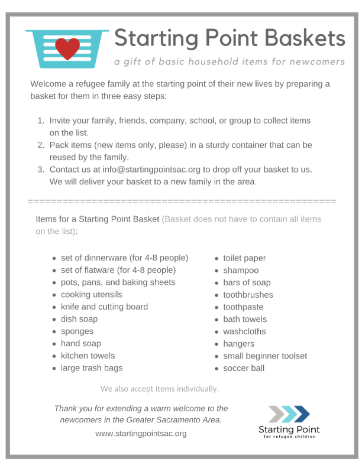
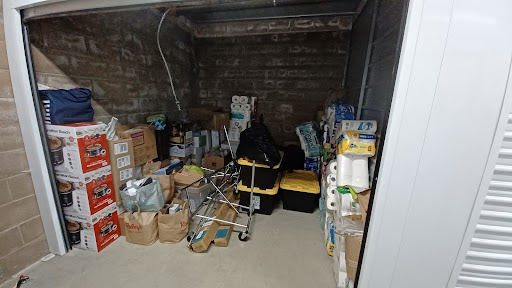
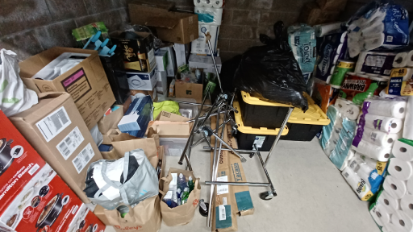
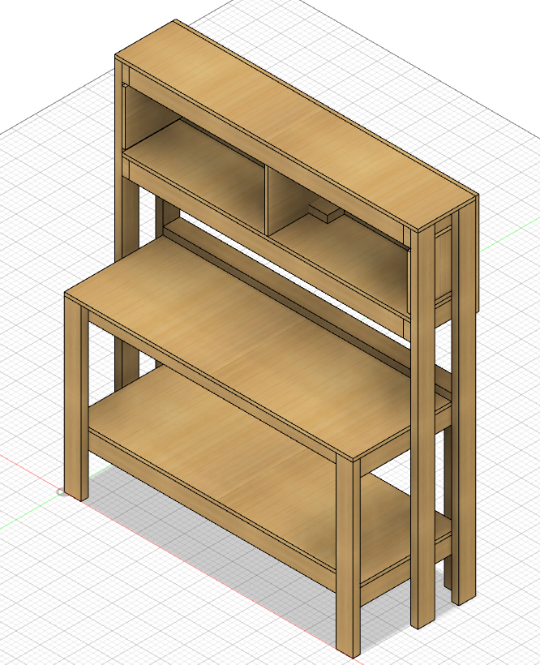
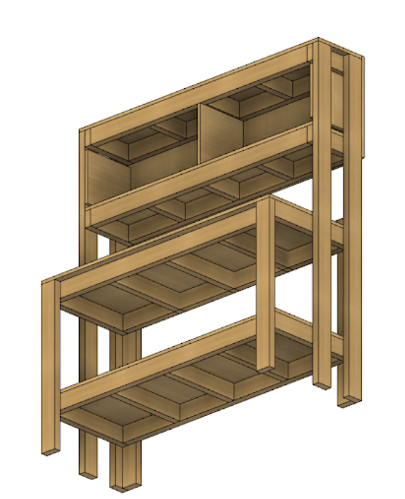
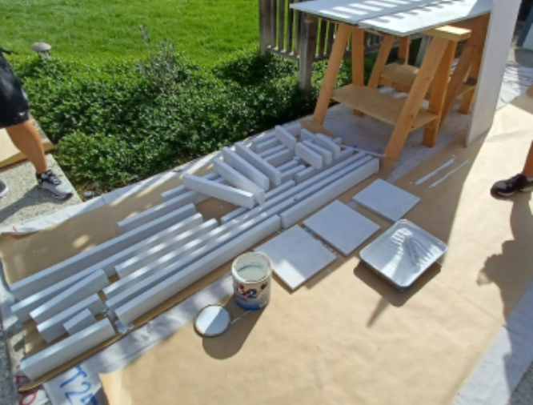
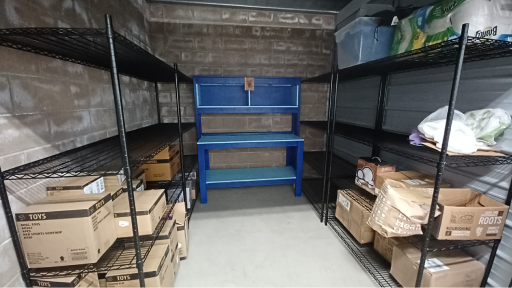

I haven't had any previous work experiences yet, but I think becoming an Eagle Scout is noteworthy.
I was a member of the Boy Scouts of America Troop 250 from 2014 to 2022. According to the national BSA web site, Scouting helps youth develop academic skills, self-confidence, ethics, leadership skills, and citizenship skills that influence their adult lives. Scouts are encouraged to take on leadership roles and teach younger scouts important life skills. You can learn more about Scouting here: What Is Scouting?. Eventually I was appointed as a patrol leader. I coordinated with troop leadership and other patrol leaders to design and execute Scouting activities, which improved troop cohesion and helped younger scouts grow, resulting in a smoother, more efficient operation of the troop. My troop was split into 4 patrols, and each patrol has about 5 members. Sometimes patrols create their own individual activities every Friday, but there are numerous activities that involve the whole troop, like camping.
There are 7 ranks, and being an Eagle Scout means you have achieved the highest rank. Becoming an Eagle Scout is extremely difficult. These are the most difficult requirements:
The Eagle Project is by far the most difficult requirement, and pushes a scout past their limits. An Eagle Project is a service project that benefits any religious institution, any school, or your community. An Eagle Project must be large enough for a scout to lead others. Some examples of Eagle Projects are painting a church, planting trees, landscaping, and building homes for wildlife. This must be completed before the scout turns 18 years old. Without careful planning, a scout may run out of time to complete their service project because planning takes a very long time.
For my Eagle Project, I led a team of 25 over the course of 2 months to build a workstation and assemble shelving for a nonprofit organization named "Starting Point," increasing their efficiency in creating gift baskets and care packages for newly-arrived refugee families in the greater Sacramento area. You can learn more about Starting Point here: Starting Point. 
I first discovered Starting Point at my church, Xaris. My church became a sponsor for Starting Point a few years ago. Starting Point is an organization that supports recently resettled refugee children with their special projects and community programs. Starting Point welcomes refugees who arrive in the U.S. with very few possessions with gift baskets. These basket contain essential household items. Anyone can donate these items to Starting Point, and this flyer shows people how to do so:
Starting point rented a self-storage unit to store these donated items and used the space to create gift baskets. The founder and director of Starting Point, Vickee Moy, wanted the storage space to be organized and more easily accessible by the volunteers at Starting Point. It was difficult for them to put together gift baskets for refugees efficiently because the storage was disorganized and tight on space.
I was able to get in touch with Mrs. Moy because knew my church and my family well. After learning about her problem, I decided to help Starting Point for my Eagle Project. I decided to help organize thier storage space, indirectly helping newly arrived refugees.
Here is what the storage area looked like before my Eagle Project:
 I designed a wooden workstation that allows Starting Point to assemble gift baskets efficiently. The scout who is in charge of their Eagle Project is supposed to lead others in doing all the manual labor without doing any themselves. I created a blueprint for the workstation while my volunteers assembled it.   
I purchased shelving so Starting Point could organized their donations. I bought four 3-tier metal shelves that cost about $600. I gathered donations from family friends and my church to fund the shelving.
Here is what the self-storage looks like now. My blue workstation is in the middle while the four shelves are to the sides.
After completing my project, I became an Eagle scout. I've learned important skills that I can apply to my future jobs: